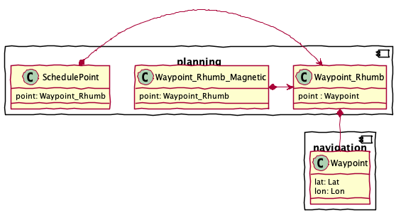
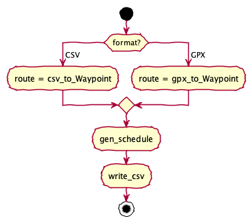

planning – Route Planning Application¶
The planning application is used to do voyage planning.
It computes range, bearing and elapsed time for points along a route.
Here’s the structure of the classes in this application:

Planning Approach¶
Currently, the planning application computes distances and Estimated Time Enroute (ETE) for each leg.
It does little more than this. The approach is embodied by creating a SchedulePoint object.
This is direct enrichment of the Waypoint instances along the route.
There are a number of potential improvements to this approach:
Include an estimated time of departure (ETD) as a basis for computing ETE and ETA.
Include the position of the sun for each ETA.
Include a Noon position on any leg that spans local noon.
An event more sophisticated planner would allow for two kinds of plans:
A “forward” plan uses a Desired Time of Departure (DTD) to compute a sequence of ETE and ETA’s.
A “reverse” plan would use a Desired Time of Arrival (DTA) and work backwords to compute departures and times enroute. This would lead to a Desired Time of Departure (DTD).
The idea is to reduce the amount of work done with a spreadsheet outside navtools.
Improvements¶
There are several improvements required.
Todo
Locate the sunrise equation and include anticipated time-of-day for an ETA
Todo
Compute the locations at noon of each day.
This requires looking at waypoints before and after local noon, Splitting the segment to find noon, and adding a waypoint with no course change.
The goal is to match the output content of opencpn_table:
waypoint: Waypoint
leg: int
ETE: Optional[“Duration”]
ETA: Optional[datetime.datetime]
ETA_summary: Optional[str]
speed: float
tide: Optional[str]
distance: Optional[float]
bearing: Optional[float]
course: Optional[float] = None
Implementation¶
This module includes several groups of components.
The Input Parsing group is the functions and classes that acquire input from the GPX or CSV file.
The Planning Computations functions work out range and bearing, magnetic bearing, total distance run, and elapsed time in minutes and hours.
The Output Writing group is the functions to write the CSV result.
Finally, the Command-Line Interface components are used to build a proper command-line application.
Input Parsing¶
The purpose of input parsing is to create Waypoint objects
from input file sources.
A Waypoint is a 5-tuple of name, latitude, longitude, description
and “point” information. The “point” information is a
navigation.LatLon instance that combines the source lat and lon
values.
The input parsing supports two formats: CSV and GPX. Each source format has
a different kind of parser. The CSV parser uses the csv module. The GPX parser uses
xml.etree; it uses the findall() method to iterate
through all of the rows.
Note that the GPSNavX output was encoded in Western (Mac OS Roman).
This can make CSV parsing a bit more complex because there will be
Unicode characters that the CSV module doesn’t always handle gracefully.
However, the patterns used for parsing tolerate the extraneous bytes
that appear in the midst of degree-minute values.
Parses the CSV files produced by tools like GPSNavX or iNavX to yield an iterable sequence of
Waypointobjects. These files had no heading row. The assumed column order is “name”, “lat”, “lon”, “description”.Note that the old GPSNavX output was encoded in
Western (Mac OS Roman). This can make CSV parsing a bit more complex because there will be Unicode characters that the CSV module doesn’t always handle gracefully. However, the patterns used for parsing tolerate the extraneous bytes that appear in the midst of degree-minute values.- Parameters
source – Open file or file-like object that can be read
- Returns
iterable sequence of
Waypointinstances.
Generates
Waypointonjects from a GPX doc.We assume a minimal schema:
<rte>contains<rtept lat="" lon="">contains<name><description>
In some cases, there are additional attributes available, but we don’t seem to need them for planning.
- Parameters
source – an open GPX file.
- Returns
An iterator over
Waypointobjects.
Planning Computations¶
The various navigation calculations use an immutable object (or functional
programming) style. A series of functions create new, richer objects
from the initial Waypoint objects.
Specifically, we use the following kind of function composition.

Schedule Details¶
Scheduled waypoints. These include distance, bearing, and estimated time enroute (ETE).
Todo
Unify with
opencpn_table.Leg.leg: int
ETE: Optional[“Duration”]
ETA: Optional[datetime.datetime]
ETA_summary: Optional[str]
speed: float
tide: Optional[str]
distance: Optional[float]
bearing: Optional[float]
course: Optional[float] = None
Calculates distance, bearing, and time en route for each waypoint. This is the forward algorithm starting from start_datetime.
The algorithm peeks ahead to compute the course to the next waypoint. This requires a route with two or more waypoints.
It works like this:
Set previous = next(iter); here = next(iter)
Yield previous with no ETE or distance, course from previous to here.
For end in iter:
Compute ETE and distance from previous to here
Yield here with ETE and distance from previous to here and course from here to end.
Set previous, here = here, end; with some cleverness, we should be able to reuse distance and bearing.
Compute ETE and distance from previous to here
Yield here with ETE and course from previous to here and no course.
This requires a wee bit of optimization to prevent duplicate cade. We should, specifically, cache the distance and bearing to avoid recomputation.
- Parameters
waypoints – Iterable collection of
Waypointobjects.variance – the magnetic variance (a/k/a declination) function; generally use
navigation.declination().start_datetime – the date on which to compute the variance; default is today
speed – Default speed assumption to use; default is 5.0 knots.
- Returns
iterator over
SchedulePointinstances.
Output Writing¶
Writes a sequence of Schedule objects to a given target file.
The file will have the following columns:
“Name”, “Lat”, “Lon”, “Desc”, “Distance (nm)”, “True Bearing”, “Magnetic Bearing”, “Distance Run”, “Elapsed HH:MM”
Note that we apply some rounding rules to these values before writing them to a CSV file. The distances are rounded to \(10^{-5}\) which is about an inch, or 2 cm more accurate than the GPS position. The bearing is rounded to zero places.
Note
It’s hard to steer to a given degree, much less a fraction of a degree. Classically, the mariner’s compass divides the circle into 32 points; this is 12.5 degrees each point. That’s an appropriate rounding for coastal cruising.
The width of your fist at arm’s length is 10°. If you extend index finger and pinky, that’s 15°. In the middle is all the accuracy you have when steering by hand.
Returns a rounded value, properly honoring
Noneobjects.- Parameters
value – Float value (or None)
digits – number of digits
- Returns
rounded float value (or None)
Writes a sequence of
Scheduleobjects to a given target file.The file has the following columns:
"Name", "Lat", "Lon", "Desc", "Distance (nm)", "True Bearing", "Magnetic Bearing", "Distance Run", "Elapsed HH:MM"
It makes sense to unify the output with OpenCPN’s plan. This leads to the following columns:
"Leg" -- sequence number of legs. "To waypoint" -- Waypoint name from the GPX source "Distance" -- Equirectangular distance to the waypoint. "True Bearing" -- True-North Bearting "Bearing" -- Magnetic bearing (with decliation.) "Latitude" -- Waypoint latitude from the GPX source "Longitude" -- Waypoint longitude from the GPX source "ETE" -- Estimated Time Enroute in "d h m" duration format. "ETA" -- Estimated time of arrival as "date hh:mm (summary)" "Speed" -- Given speed for this leg (usually it's all one assumed speed.) "Next tide event" -- usually empty "Description" -- Waypoint description from the GPX source "Course" -- Course to steer to the next waypoint
Note that we apply some rounding rules to some values before writing them to a CSV file. The distances are rounded to \(10^{-1}\) which is about 607’. The bearing is rounded to zero places.
- Parameters
target – Open file (or file-like object) to which csv data will be written.
sched_iter – iterator over
SchedulePointinstances. For example, the output from thegen_schedule()function.
Command-Line Interface¶
Typical use cases for this module include the following.
Run from the command line:
python -m navtools.planning -s 5.0 '../../Sailing/Cruising Plans/Lewes 2011/Jackson Creek to Cape Henlopen -- Offshore.gpx'
Run within a Python script:
from navtools.planning import plan from pathlib import Path routes = Path("/path/to/routes") plan(routes/'Whitby Rendezvous.csv', 5.0) plan(routes/'Whitby Rendezvous.gpx', 5.0)
The plan() application¶
Transforms a simple route into a route with a detailed schedule.
This doesn’t compute ETA’s. It computes ETE’s for each leg, and an assumed start time can be plugged in to create ETA’s.
The date is used to compute variance, but not to compute ETA’s.
- Parameters
route_filename – Source route, extracted into CSV format.
speed – Assumed speed; default is 5.0kn.
date – Assumed date for magnetic declination; default is today.
variance – Declination function to use. Default is
navigation.declination()
The main() CLI¶
Parses command-line arguments to get the routes file names, and the default speed to use.
Then use
plan()to process each file, creating aname Schedule.csvoutput file with the detailed schedule.